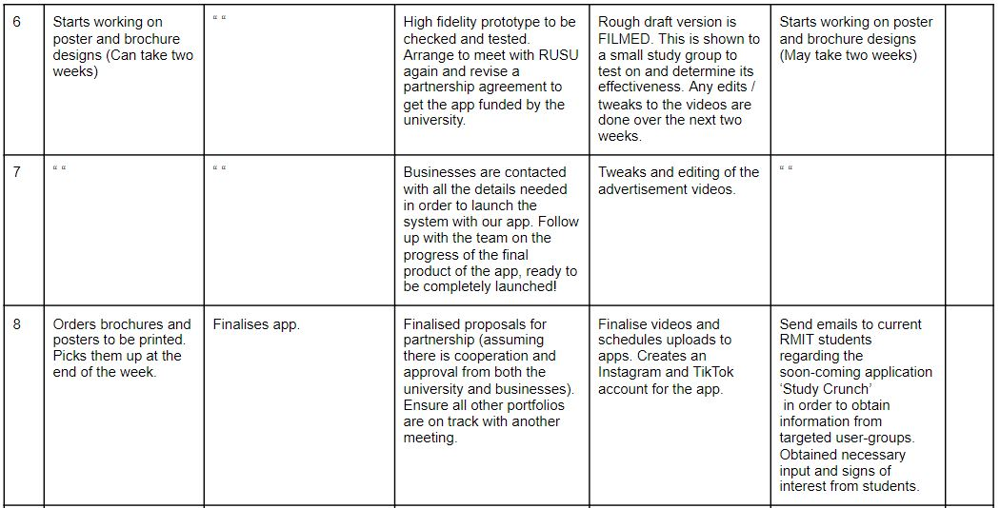

Team Members
There are six members in our team, "Powerpuff Girls" - Dani, Lachlan, Martina, Natanya, Thao, and Wendy.
Dani
s3904233
My name is Dani Fowell. I am 27 years old studying the Bachelor of Information Tech. I have a half New Zealand/Australian background and two siblings, Mitch and Matt. I have a lot of work experience ranging from hospitality, retail, call centre work and have managed 42 girls while working at Kookai in Chadstone. I’m currently an Executive Assistant and Office manager to the director of a recruitment company called Woods & Co. Some of my hobbies include going to gigs and dinners with friends but I really enjoy documentaries and books about WW2 and in particular KGB and pretty much anything Eastern Europe in the 1940-50s. My interest in IT previously has been in game development and web design but I would like to develop and experiment more in the cyber-security field. I don’t have a lot of IT experience at all except anything I taught myself and learnt 10 years ago through my Cert IV Interactive Digital Media.
Test Results:
My result from the 16 Personalities test classified me as an 'Assertive Executive'. The key values of this personality type are honesty, dedication and dignity. We give concise advice and guidance and are always putting our hands up to happily lead the way on difficult paths. We are known for organising, working hard and bringing people together. Our strengths include being strong-willed, direct, loyal, reliable and excellent organisers. Executives project natural authority and take genuine pleasure in organising others into effective teams which makes this particular personality well suited for managerial positions where creating order, following the rules and ensuring high standards come naturally.
Group Processes:
I came from another group so I’m going to discuss my experience working with them. I really did find out the importance of forming a group with similar working styles. I am someone who doesn’t like leaving things to the last minute, I am a list orientated person, if I’m not getting tasks completed and moving onto the next, I get frustrated. This was the opposite mentality of my group. Working with five 18-year-old boys who leave everything to the last minute, don’t take things necessarily seriously until they must, was really challenging. Moving forward, the group I’ve moved into, I understand that the other 3 members who I know/have met are efficient and studious. We all seem to be on the same wavelength when it comes to setting mini deadlines and scheduling meetings.
Career Plan:
My career plan is not particularly set in stone. I entered the Bachelor of IT to determine which area of IT I enjoy most and I have had very little exposure to avenues within the industry. I am currently working at a recruitment firm as an EA and Office manager and will continue working there until I graduate in 2024. Upon completing my bachelor's I will most likely utilise my workplace being a recruitment firm and try and apply for work not only through the main channels but also through back door networking through my colleagues who are familiar with the IT industry and large companies within it. From there I will hopefully be able to secure some form of a post-graduate position in a company with good workplace culture and career progression and slowly work my way up to a leadership or managerial position.
Lachlan
s3908412
Born on June 29th 1999, I am currently 21 years old and have just begun a new chapter in my life at RMIT. Fortunately my parents had blessed me with a multi-cultural and unique upbringing, raising me in countries Bangladesh, Vietnam and Cambodia. Due to my parents both teaching at International Schools, my sister and I were able to attend great PYP/MYP & IB schools. Living abroad for 13 years has immeasurably extended my world-view and convinced me that when/if I have kids of my own I want to make sure they have a similar opportunity. After graduating grade 12 with a decent score I applied to Monash University. Melbourne appeared to be a great choice for me as I had some relatives still living here as well as my older sister who had recently been accepted into Melbourne University. Unfortunately not all things work out and after 2 years at Monash I decided I was not in an appropriate financial nor mental state to be continuing my studies and left just before 2020. After a year locked inside without much to do other than work and reflect on where I want to see my future self, I decided it was time to jump back on the horse and give university another go!
Test Results:
FILL
Group Processes:
FILL
Career Plan:
FILL
Martina
S3908137
Hi I’m Martina and I am Australian Vietnamese. I like to play the keyboard, guitar and ukulele, and my go-to songs to play are either recent pop songs or ballads that I learn off YouTube. One other thing is that I never fail to sing or hum a tune at least once a day. I started in the field of commerce fresh after high school, but I always had a small interest in the field of information technology, so I switched midway through my previous degree to pursue IT at RMIT. My understanding in IT is basic even though I grew up with technology all around me. The closest IT experience I have is in my everyday consumption of all the different technologies surrounding me, but I am keen to learn more about information technology in this bachelor's program at RMIT.
Test Results:
My (Myer-Briggs’) personality type is ISFP-A- adventurer, where my personality traits are Introverted, Observant, Feeling and Prospecting. My online learning style test results suggest I am a combination of a tactile learner (45%), auditory (30%) and visual (25%) learner. In my Big Five Personality test results, I scored a 67 in agreeableness, 62 in emotional stability, 46 in conscientiousness, 33 in extroversion, 2 in intellect/imagination. These test results show as an individual I am quite free-spirited and tend to enjoy doing things my own way and that I enjoy doing a lot more hands-on tasks. In a group setting my results confirm that I am a diligent worker when I am given a task, and that I would work hard to earn appreciation. I would be a reliable teammate, who would prefer a harmonious working relationship with my fellow peers and would try to solve problems as they come. My ideal team is diligent and supportive, with a similar work ethic as myself which is to do the tasks asked in a timely manner. I also prefer short term goals over long term goals, so I would need guidance and support to keep me motivated in projects that take time.
Group Processes:
The powerpuff girls, before our new members, were able to get along well, but our execution towards the deadline of assignment two was poor. There was an imbalance in who was putting in effort to get the work completed on time, and we ended up working on the assignment mainly on the last few days before it was due. We have many areas to improve on, with the main ones being communication, time-management, and discipline. In assignment 3, I hope we are all able to hold ourselves responsible and have self-discipline to meet deadlines on time and have better time management leading up to the deadline.
Career Plan:
In the Bachelor’s degree, I would undertake the major stream of Software Systems development. The subjects I would consider taking include programming 1, further programming, system deployment and operations, software testing, object-oriented software design and systems architecture. These will be the main subjects that I hope will allow me to gain the skills to create software systems in the ideal job I have listed. I would plan on gaining some sort of experience alongside my studies by searching for an internship or if anything, volunteer on the side for non-profit organisations to develop my IT knowledge. I would then love to work in a graduate program for at least 1 year before considering the jump to work overseas in a job such as a programmer systems analyst.
Natanya
s3488872
Hi, I’m Natanya and I’m from Melbourne - I was born in Sri Lanka and migrated to Australia when I was four. My passions are travel, fashion, photography, singing, design, and social psychology. I’m also passionate about the environment, international aid, and volunteering in these areas! I have travelled over the years to around 16 or so countries, in various capacities, learning the national languages where I could. After graduating high school in 2013, I went on to study a Bachelor of Fashion Design at RMIT for two years. Realising it wasn’t for me, and not what I wanted to do career-wise, I travelled and worked on and off, before considering enrolling in an IT degree. My pursuits in various areas over the years led me to realise I enjoyed things of a practical and logical nature, and my affinity for tech also made it easier to decide on this. Being a growing field, I found IT an ideal sector to enter, and already had some knowledge of the field through my brother (an IT consultant), and my own exploration and life experiences. Currently, I’d like to explore the areas of cloud-computing and cybersecurity, but am aware this might change. I’m a member of the team: Powerpuff Girls.
Test Results:
My personality type (as measured by the Myers-Briggs test) is type INFP-T (Turbulent Mediator) where my traits are 73% Introverted, 52% Intuitive, 69% Feeling, and 60% Prospecting. My learning style is multimodal according to VARK - scoring highest in Visual and Read/Write (11 each), 7 in Kinesthetic, and 4 in Aural. My Big Five Personality Test scores were: 45 in Extroversion, 30 in Emotional Stability, 80 in Agreeableness, 26 in Conscientiousness, and 14 in Intellect/Imagination. All of these results tell me that I tend to follow my emotions, am a perfectionist, and therefore leave things until the last minute as I have an all-or-nothing style/mentality. I need teammates to set deadlines so I can stick to them and be held accountable, but I am also conscious of others’ feelings and therefore do not want to let anyone down, so this drives me to complete whatever I do/my team does, to a high standard, as I am also very detail-oriented. Expanding upon our project idea from Assignment 2 in terms of the concept itself might be difficult for me as I do not have a very good imagination, so I would need team members who are stronger in this area.
Group Processes:
Whilst the personalities of my group in Assignment 2 didn’t clash, and we got along amicably, working together proved quite a challenge. Equal contribution, participation, initiative and accountability were our weak points, not to mention, a great deal of procrastination. In Assignment 3, additional members Lachlan and Dani will be joining our group, and I assume this will come with its own shift in dynamics. However, with more people in the team, I am expecting a more even distribution of work, thereby affording each of us the ability to focus more on our assigned tasks, producing higher-quality work overall, and less stress.
Career Plan:
Within the Bachelor of Information Technology, my plan is to undertake the Security and Cloud Computing stream. Furthermore, an internship would be a valuable asset that I could undertake in my second or third year. I currently don’t have any plans for further study after graduation and ideally would like to get straight into the workforce. My ideal job is in the below table - a graduate cloud-computing engineer position through FDM Group – a recruitment and training company in Singapore allowing me to start working overseas as soon as I graduate, getting my foot in the door and allowing me to work my way in and up from there. Although I am not quite sure yet if an engineering role would suit me, a role similar to this in cloud-computing would assist me in gaining the necessary experience to work in the sector.
Thao
s3901351
My name is Thao and I am an Australian-born Vietnamese. I was born on the 3rd September, 2002 at Mercy Hospital. I speak both fluent Vietnamese and English, as I am born to refugee parents who don’t comprehend English. I previously completed my VCE in 2020 at Koonung Secondary College, located in Mont Albert North and am now completing my bachelors of Information Technology and at the Royal Melbourne Institute of Technology. I enjoy painting and drawing during my free time, and also binge watching anime. You can often find me spending all my Centrelink funds at restaurants along Swanston Street after class. I am a proud owner of both a dog and a cat, named Chip and Ghoti. My current information technology skills are currently very minimal, however that sparked my interest towards completing this Bachelor, as technology has become such a pivotal and significant part to society. I am not a huge STEM person, and prefer arts and humanities, however as I am still young, I believe this is a good challenge and I can always change pathways in the future.
Test Results:
According to the Myer-Briggs test, I am an INFP (Mediator) and I am 82% Introverted, 54% Intuitive and 63% Feeling and 65% Prospecting. Traits include Introversion, observant and idealistic. I am not one to take initiative on tasks, and will require a leader to direct me as I am not one to take on a leading role. I may also be too idealistic and not think logically, as I prioritise my feelings over logic. I am also sensitive to my surroundings and highly appreciate art and creativity. For the learning style test by educationplanner.com, I am majorly a visual learner (64%), then a tactile learner (21%) and then Auditory learner (15% ) My big 5 personality traits according to truity.com I have openness (87.5%), Conscientiousness (12.5%), Extraversion (44%), Agreeableness (71%) and Neuroticism (90%). According to the results I am an empathetic idealist, and a practical caretaker and have a tendency of putting other people before myself. They state that I may have a highly creative and imaginative way of thinking and I often see connections through interpretation. My thinking may be disrupted by unpleasant thoughts and I may have trouble focusing. My ideal team is one that has a leader and someone who can direct and allocate me tasks that I can follow. I would like the team to be collaborative and happy to assist each other with tasks, and keep each other accountable for our contributions within the team environment.
Group Processes:
The powerpuff girls were initially a group consisting of only 4 members prior to the arrival of our new members. We were able to get along personality-wise, however there were definitely complications regarding getting tasks completed promptly, and also splitting the workload evenly. In assignment 3, we aim to work more productively through communicating with each other effectively, and also being more accountable for our responisibilies, ensuring that we are taking initiative of our tasks. Hopefully with the increase of group members, the sailing of this assignment will run smoother compared to Assignment 2 and we can continue to work amiably.
Career Plan:
Whilst I am still rather indecisive about what I want to pursue in the future, I am interested in following the web and mobile computing stream. This stream will educate me on how to develop interfaces, communication protocols and back end systems to support the ever-increasing demand for web and mobile computing applications. I am also leaning towards completing a marketing minor alongside my major as I believe they will compliment each other. I am interested in the web and mobile computing stream as there is a creative aspect towards that study, which I believe is a personal strength of mine. However, I am still young and have only recently graduated highschool. I am still testing waters and my interests and strengths may change as I continue to delve into university, which is a new environment for me. So, as of right now I am sticking to what I know is my personal strength, which is something that is a mixture between creativity and technical.
Wendy
S3898700
Hello, My name is Wendy Si and my student number is s3898700. I am from Shanghai, but was born and raised in Melbourne. My date of birth is the 8th of February 2003 and my background is Chinese. I graduated from Nossal High School in 2020 and am now a first year Bachelor of Information Technology at RMIT. I can speak English and Mandarin Chinese, and can understand Shanghainese. A fun fact about me is that I used to be a state level swimmer when I was around 10 years old. My hobbies are playing video games, reading manga, watching anime, going clubbing and going out with friends. My interest in Information Technology is mainly centred around the coding aspect, I am interested in creating programs and learning the languages. I like how Information Technology is very practical as well, with getting the opportunity to make things. This allows me to implement what I’ve learnt and be able to create projects and sharpen my skills. My experience in Information Technology is very minimal. I learnt enough HTML to build a website back in 2017 and completed an online course in Python 2 in 2018, however those skills are long forgotten as I haven’t retained my knowledge from that time. Our team’s chosen name is the Powerpuff Girls.
Test Results:
My test outcome for the 16personalities test was ISFP. ISFP people tend to have introverted, observant, feeling and prospecting personality traits.These results may influence my behaviour in a team negatively as ISFP personalities want to do things their own way and being in a team would restrict that. By taking these into account and according to 16personalities, when forming a team I should have a balance of set goals and also freedom to express myself as well as dealing with problems one-on-one or by myself. According to educationplanner.org, I am a 50% visual learner, 45% auditory learner, and 5% tactile learner. Visual learner means that you learn by reading or seeing pictures and understand through sight. These results may impact my behaviour in a team negatively as visual learners may have difficulty with spoken instructions which are often presented in group settings through discussions and interactions.Behaviours of visual learners that could benefit a team is having a strong imagination and understanding projects as a whole. By taking these traits of visual learners into account when forming a team, I should aim to try and write down instructions I get so that I am able to review and understand them at a later date, and also contributing my ideas before the opportunity passes.The results from truity.com show that I scored high in neuroticism and low in conscientiousness. Those scoring high in neuroticism typically react to situations negatively, or think about situations in a pessimistic manner. Those with low conscientiousness scores are often more impulsive and easily distracted. Going by these results, my behaviour would impact my team negatively, as I would not stay on top of tasks and deadlines, and also give up easily when plans go astray. By taking these results into account, a way to combat these negative traits would be to actively try to overcome them by recognising when the behaviours are being exhibited and correcting them.
Group Processes:
The group had previously consisted of 4 members during Assignment 2. I do believe that as a team we had synergy and good communication, however as mentioned by the other members, the workload was not distributed evenly. In Assignment 3 I hope that we are able to manage our time more efficiently and have more self discipline(me).
Career Plan:
I am still unsure as to what career path I would like to enter in the future, however I still believe that a career in the cybersecurity field would be very accommodating and beneficial. Branching off into this field would educate me on how to be a crucial component in companies and have more knowledge in computer languages and mainstream operating systems as well as further improve my written and verbal communication skills. Though I do have an interest in the cybersecurity field, I have not looked in depth into other fields of study, therefore this is not a concrete path I would like to follow and may change my mind in the coming years.
FILL DISCUSSION here
Tools
A new Canvas group was set up to include our two new members, Dani and Lachlan. A new GitHub repository was created, with all six members of the group invited to be collaborators. This group website was also set up to include all A3 content. Our website style and formatting is duplicated from Assignment 2, with some changes.
Our GitHub repository link: https://github.com/s3488872/Assignment-3-Group-Project
FILL The audit trail on the Git repository reflects our group’s work... FILL
The same MS Teams group used in Assignment 2 for the group Powerpuff Girls was used as our main form of communication in Assignment 3. Lachlan and Dani were added to the channel. Our meetings were all conducted via MS Teams, were recorded, and are available to watch – most conducted on the ‘Meetings’ channel. Meeting files for both Assignment 2 and Assignment 3 are available on the channel; with Assignment 3 files available in the folder of the same name. Other files are also available across the channels, as are links to external files, where applicable.
A single Google Doc was again used to collaborate, and pinned in the ‘General’ channel - all report information was uploaded, collated and edited via this document, and from this a PDF version was created for submission. A second Google Doc was created for an ‘MS Teams Information’ document, from which a PDF version was generated for submission, alongside our main report.
Join our MS Teams Channel
Meetings
1. 11/05/21 Agenda Recording Actions
2. 18/05/21 Agenda Recording Actions
3. 23/05/21 Agenda Recording Actions
4. 25/05/21 Agenda Recording Actions
Project Description - Overview
Topic:
Powerpuff Girls’ project idea is an application named ‘Study Crunch,’ which enables users to gain credit for studying for a certain elapsed amount of time. The purpose of this app is to encourage users- especially students and workers to work more productively and to build a healthy work ethic.
The app aims to help mainly students and workers who suffer from procrastination and distractions easily, ‘to work hard and play hard,’ by treating them to discounts to amazing meals, drinks and discounts. The productivity cross food and drinks application takes inspiration from the pomodoro study technique which has helped many achieve greater productivity by breaking big projects into small tasks, and repetitively completing work in short blocks with relatively shorter breaks. The Pomodoro has been proven to be a highly successful method in enabling those who struggle to stay productive to get tasks done promptly without 'burning out'.
If the project is successful, the outcomes are multifaceted. Firstly, the main aim of aiding increased productivity will be achieved, where the target of students will find it easier to study and get their work completed and an overall more productive society will come from it. This would hopefully become pivotal to encouraging more students to continue their studies and complete their programs, courses, and education. A more educated population can lead to a higher proportion of our society obtaining higher-education required jobs, further resulting in a more financially advantaged society, and perhaps a happier one too with their newfound productive booster. Not only will it encourage more productiveness in our society, but also boosts expenditure in our businesses and economy overall. Behavioural scientist, Valk, says that, “according to the Pleasure Principle and the Regulatory Focus Theory, people seek pleasure and avoid pain [and] the anticipation of missing out on a discount is a pain people want to avoid.” Thus the potential credits that can be earned by users is ‘unmissable,’ meaning the user will most likely use these discounts to purchase food and drink items at more restaurants and cafés.
Motivation:
The ‘Study Crunch’ app targets the student population to aid them in their studies by creating a unique and innovative incentive which is credit to use at amazing restaurants or cafes that exist in Melbourne. Interestingly, over 1 million Australians visit the app, ‘Zomato,’ monthly, which contains information of trending restaurants organised by cuisines and price point (Morgan 2016). This is a strong indicator of the ‘foodie (“a person who loves food” according to the Cambridge dictionary)’ culture in Melbourne, which can be linked to the potential success of an app like ours which will provide our users with the opportunity to enjoy great food at a discount, in exchange for their productivity. The study technique that inspires our app is known as the ‘Pomodoro style,’ which is a repetitive cycle of a short burst of productiveness (typically 20 minutes) followed by a short break (typically 5 minutes) until the user decides they are done for a session. From Dr. Gassaley who is a neuroscientist, and Dr. Rosen who is a psychologist, they mention that there is even research that confirms how dividing work sessions with breaks, which are rewards, increases the likelihood of completing work to gain the reward (Memon 2019). So with the added incentive of earning credit to pay for food, the productivity among students is expected to increase overall.
As 2020 was significantly a tough year for our hospitality industry due to COVID-19, we were inspired to find a solution to help rebuild the hospitality sector in Melbourne by mainly aiming to work with small businesses to increase business exposure to the wider public and encourage spending with these businesses with these credits earned. COVID-19 also placed a huge toll towards the mental health and wellbeing of students and workers who may not have been able to work during the lockdown, causing financial hardships and difficulties. As Study Crunch rewards users with meals, drinks and discounts, there will be less of a financial burden towards those who were not able to gain any income throughout COVID, and can rely on the application’s rewards rather than compromising for frugal, non nutritious meals due to their financial circumstances.
Apart from supporting small businesses and restaurants from the burden they dealt with throughout COVID-19, this application also intends to assist students who may be financially struggling and are unable to afford groceries or meals. Most students are living off part time jobs that pay minimum income, or live off student funds such as Centrelink, and therefore are required to live frugally off their savings. This often causes students or workers to often resort to compromising the quality of their meals such as opting for non nutritious or lackluster dishes, which may be detrimental towards their health in the long run. Balancing a healthy and balanced lifestyle may be especially difficult for students as they are highly occupied with studying and therefore cannot sacrifice time to prepare meals, or cook at home and therefore have to resort to purchasing expensive take-out food. The motivation for this app is to help enable students to focus on studying, without the stress of having to spend countless hours and worries regarding their next meal or food when they can simply focus on their education, and have a guaranteed meal by the end of the night. Study Crunch intends to enable students and workers to save money whilst also being able to have access to satisfying, indulgent meals. In the city of Melbourne, based on the 2016 census conducted by the Australian Bureau of Statistics, 35% of the population were students. This is a vast percentage who, assumedly, would be required to study and complete work to progress in their respective studies.
Landscape:
One of Study Crunch’s largest competitors is the existing productivity app, ‘Forest’, which is available for both iOS and Android devices. Similarly to Study Crunch, the Forest App also adopts the pomodoro study technique approach. The ‘Forest’ app aims to build and help the environment by partnering with a real-tree-planting organisation, ‘Trees for the future.’ Users of Forest app are rewarded with a virtual forest which gradually accumulates through consecutive sessions of productivity- the virtual tree will wilt if the user does not commit to their set time, therefore encouraging users to commit to their goals to maintain the overall aesthetic of their ‘forest.’ Users are also given the opportunity to use their accumulated points to plant a real tree. Currently, as of May 2021, there are 1,113,593 trees planted by Forest app.
However, to contrast the two applications, the main differences between Study Crunch and The Forest app is the incentive.
Study Crunch’s incentive is allowing users to obtain food from partnered restaurants with the user’s accumulated earned credits. This makes Study Crunch’s reward more tangible, which may make users such as students more inclined to routinely use the application for its use and benefits.
Another major competitor to Study Crunch may be the ‘Screen Time’ feature available on iOS devices. Screen Time is a big competitor against Study Crunch as it is a pre-configured feature on IOS devices, and users can easily access the productivity features without needing to install any additional applications or programs. With Screen time, users can set allowances and limits for their app use, schedule downtime and more. Users have the option to block apps and notifications during periods they want to avoid using their devices, so they can complete their tasks and obligations without getting distracted. However, there are no additional rewards associated with Screen Time, unlike Study Crunch which rewards the users with credits which they can convert into food, drinks and discounts. Therefore, users may be more interested towards Study Crunch, as there are incentives that come along with the productivity features.
Project Description - Detailed
Aims:
The main aim of our app is to help create a productivity app that utilises the ‘Pomodoro technique’ in order to encourage users to become more efficient and productive students. The app uses positive reinforcement to facilitate the mental connection between uninterrupted study periods and reward to better push students to remain undistracted and focused.
A secondary aim is to also direct student spending to cafes associated with RMIT. As the app would ideally be sponsored by RMIT, this results in a full circle effect of students spending at RMIT cafes and bars to help fund the sponsorship that RMIT is paying towards the app.
Plans and Progress:
The project came from the inspiration of the app ‘forest’ which is another successful productivity app. The idea of combining credits to use and enjoy at restaurants and cafes was natural as most of us are ‘broke’ university students who spend a major part of their time at university, finding great places for their daily coffee or tea and holy grail meal on campus. It was an easy decision for the group to decide on formulating this idea to a reality as we all could easily relate to what the idea could offer us. The motivation was also to help Melbourne’s city and their small businesses by thinking of a way we can encourage more students to buy within the city and the easiest suggestion was to create incentives such as discounts.
Since the beginning of assignment 2, the idea was based around being able to find sponsorship from any restaurants and cafes in Melbourne, but from further discussion and planning it was realised that this would most likely not be possible. As many cafes and businesses have struggled because of COVID-19, it was in our best interest to be realistic with the situation and see that it would not be a scheme that many businesses would easily be onboard with. We have instead shifted our focus to convince a university, beginning with RMIT, to help bring their campus’ restaurants and cafes to join the app. We also agreed this would be the most feasible goal to begin with working with one university, as that way it would be at a smaller scale, with limited users who are strictly students attending RMIT. As of now, we are at the stage of creating a prototype of the app which will come with functions such as:
→ A timer: to set different times for focus periods
◆ Minimum is 20 minutes of focus
◆ Restriction on other app usage
→ Wallet: shows credit that has been earnt
◆ Barcode generation in the wallet
→ List of cafes and restaurants compatible with your credits earned
→ Study history; digital wellbeing
◆ Totals on how many breaks taken, how many focus periods completed (as visual statistics)
→ Links to Google Pixel focus mode/ app limit on Apple
→ Schedule input
◆ Notification set up
As seen, the app ‘Study Crunch’ is still in its early stages and is still finding its feet on how it will work and who (such as restaurants and cafes) it can work with. We plan to contact mainly cafes that are situated in RMIT’s city campus to gain insight on whether the possibility of them joining to work with an app such as ours is valid. Some of the cafes in the city campus include:
• The Bean Project
• Standing Room
• Little Bang Espresso
• STREAT
• Lady Casey
• RUSU Realfoods
• Boost
In the first few days of designing the wireframes, one of our members proposed a new idea to improve on the credit earning system. The suggestion was to change the credits from currency of cents and dollars to single points which can be redeemed with the cafe and restaurant still. This suggestion allows the business to have more flexibility in creating the discounts or coupons that can be used. With more flexibility it is also linked to being able to increase the interest in our app idea, rather than having a static price discount given to users when they want to use it on certain items with a sponsor. A restaurant or cafe is given leniency to put their own products on ‘special’ with the credit points system and it would work in their favour. For example, they can reduce a near expiring product by providing a generous discount to the item in exchange for a low amount of credits from users. Therefore a majority of the team agreed that with credit points it gives more options to us and to sponsors to work with. The same limits would be put in procedure still, such as only one discount can be used in a single store in a day, and a limit on focus periods is also kept at 8 hours.
Another problem was that there would definitely need to have another app for businesses to access to ensure the redeeming process of coupons or discounts was being tracked against each user’s account. This was the only way that made the most sense to our group, that a corresponding app would need to be created. At the current time however, our skills and given timeframe do not allow us to particularly plan and create another app/ prototype that can be functional to a business yet.
FILL FILL FILL FILL FILL
wireframes here
Roles:
Specific roles have not been defined for our project within the group. Although it can be said that Lachlan is our key UX/User Interface Designer, as he will be completing our tangible prototypes/artefacts (i.e. via Figma), other roles such as ‘Lead Developer’, ‘Technical Designer’, or ‘Project Manager’ are not allocated to any specific team members. We have chosen to distribute work as evenly as possible, and follow a week-by-week basis for doing so, in order to keep things manageable and in “bite-sized chunks”, and so as not to overwhelm ourselves nor each other – and so we don’t feel assigned roles would benefit us. This allows us to not only collaborate, and seek support from each other, but it still also allows us to play to our strengths when tasks pop up that perhaps align with a member’s skills, knowledge, or interests, and members can put their hands up/volunteer for these. This method also encourages a dynamic of initiative within the group. Roles will change each week for each member of our team depending upon what is discussed in our meetings, work yet to be completed, who attends the meeting, and how many are in attendance. Weighting is also considered in our distribution of work each week as some sections carry more weight than others, as per the marking rubric. Lastly, some tasks and sections are discussed and decided upon as a group, and perhaps one team member might then go ahead and elaborate on this.
Scope and Limits:
We aim to produce a prototype app using Figma that allows an iOS user to adjust a timer through the app to set a time for study and a time for a break. The app will hopefully be able to block out notifications from other apps and recognise when a user leaves the app screen to trigger the timer to stop. The time that has passed will also not get added to the accumulated ‘productive’ time. The app will allow a user to navigate to different sections such as a productive habit tracker, a list of (void) stores that participate in the discount and to their ‘wallet’ to view their total credits earned. We hope the app can guide a user to the redemption of a voucher, up to the point of it being able to create a QR code/ barcode to be verified by a business.
In terms of the businesses who would sponsor/partner with the app Study Crunch, we believe it would be best to work with RMIT university and access funding from them and to work with existing cafes and restaurants within the city campus of RMIT. Due to our limited programming skills and restricted time frame, our prototype will not include any real cafes or restaurants and will only be a simple interactive app that lets you access different panels, and at most use a timer that is connected to an accumulation of productive minutes/hours. We also only aim to create the prototype for iOS users only. We have acknowledged that only releasing to apple users will limit the number of university users, thus reducing the amount of potential profit for a business who chooses to partner with us, however it would be a method to ‘test the market’ if it were to be released and measure its success from there. This would therefore save us some extra time or money, depending on the demand to learn how to transform the prototype to an Android platform.
Tools and Technologies:
The app will initially be created for iOS only; iPhones only (not on iPad). The tools and technologies we would require for this project from ideation to build and testing include:
Hardware
• Mac computer for the build - Apple MacBook Pro Intel Core i7 4th-6th Gen. 15”+ display; 64-bit environment; min. 8GB RAM, 256GB SSD
• Additional/external storage - SSD or HDD (approx. 400-500GB for each build of the app; so ideally TB drives would be better)
• At minimum an additional iMac 24” display (or larger) would be helpful for a multiple-monitor setup required during build
Software
• Figma to create digital prototypes
• MacOS version as per chosen Apple MacBook Pro
• Xcode app development kit
• Use of Swift programming language - free and open-source under the Apache 2.0 open source license
• Apple iPhone X test phone required; only one iPhone will suffice as we don’t need to cater to multiple screen sizes across different manufacturers (unlike Android devices)
• Perhaps we need to acquire certain licenses and permissions from RMIT itself - i.e. for using its logo/partnership/sponsorship. RMIT’s marketing department and graphic design team would need to be contacted for permissions to use RMIT’s logo, as well as RMIT’s tech department and UX design team (we would need to follow protocols for websites and affiliated apps they create)
• Similarly, cafes and restaurants featured in our app will need to be contacted also for gaining the appropriate permissions and licenses to use their logos
Most members in the group (Thao, Dani, Lachlan, Martina) have experience with Apple devices including Mac laptops so they are familiar with the operating systems and UI. All members in the group have had an introduction to Figma.
Testing:
Our app, ‘Study Crunch’, would be tested by conducting guerrilla user testing at the cafes we would be collaborating with. Therefore, the test users will largely be our end users - university students - most likely and preferably RMIT students. Around 10 test users would be plenty to establish if the app is understandable, easy to use, accurately functions (blocks out notifications, keeps users on track during study), and enjoyable (if students enjoy using it and would use it again). These would be the minimum requirements for our app to be considered ‘successful’, and refinement would happen from here. This test would be done once a working prototype is created; after digital prototypes are generated and probably in the pre-Alpha/Alpha stage of the app. This method of user testing is quick and easy for us to do as we already have direct access to a large pool of potential users. It is also cheap and would allow us to conduct user experience testing with a small budget.
Timeframe:
Risks:
Our app would need to be sponsored by RMIT or RUSU, therefore our first and biggest risk is that neither agree to. Secondly, Study Crunch relies on partnerships with cafes and restaurants, so there is also always the risk that they may reject working with us for whatever reason; including but not limited to a potential loss of revenue, as they would be going out on a limb in partnering with us, and particularly without an incentive or RMIT as guarantor (through a formal program agreement for example). Other risks include being rejected by students who don’t view Study Crunch as a useful tool resulting in few downloads. Risks regarding the software itself: it could be prone to hacking. If students figure out a way to steal or cheat the system and give themselves points it could result in a large loss margin for RMIT and the cafes involved which could lead to the app being cancelled. Quality assurance testing would have to be completed in order to avoid such from happening.
Group processes and communication:
The Powerpuff Girls’ main form of communication is Microsoft Teams, however we also set up a backup method of contact through Discord. We aimed to schedule at least 2 meetings a week, which are to be organised through the ‘Meetings’ channel on Microsoft Teams. This enables us to record our discussions to refer back to when required.
Other methods of communication also include social media platforms such as Instagram and Facebook, which may be used for direct contact between individual members.
Our group relies on responsibility and trust, and we assume that members will be accountable for being up-to-date with tasks and therefore we will try not to reach out to members who do not respond to communications unless under desperate or concerning circumstances. In these cases, members will resort to using backup methods of communication such as Discord or social media platforms to contact the missing team member. Effective and frequent communication is an essential factor towards minimising errors and working productively as members are able to enquire and keep track of progress when everyone is contributing towards communications. Members of Powerpuff Girls are often interacting on Microsoft Teams channels, where we often post our inquiries or updates in addition to our scheduled weekly meetings.
Skills and Jobs
ROLE: SENIOR MOBILE DEVELOPER – iOS

Mission statement
Here at Study Crunch we endeavour to encourage students to increase their productivity through the Pomodoro method. We have partnered up with RMIT and RMIT cafes to provide a reward system in exchange for efficient studying. Apply today to work with our team on the app Study Crunch!
Role outline
As a Senior Mobile Developer you will be responsible for overseeing the development of a new iOS app for students, from build, to testing and prototyping, and finally market release. Swift experience is a must. You will work with our small team of developers and be involved in every step of the way.
Role responsibilities
• To provide leadership, mentoring and management to developers
• Apply engineering knowledge and full-stack development experience to assist back-end developers
• Communicate and work with the Business Analyst to set goals, solutions, deadlines, and update progress
• Communicate and work with the UX team throughout build, prototyping and testing
• Ensure the development team is on track throughout the build process and offer guidance wherever necessary
• Meet project deadlines
• Advise Business Analyst of any potential issues that may have an impact on the value of the project
Skills and experience required
• Minimum of 7 years’ experience in iOS app development, ideally full stack development
• Background in mobile development
• Minimum of 3 years working with Swift, Objective-C
• Bachelor’s in Computer Science with a focus on engineering
• Knowledge of other programming languages such as C#, Python, C++, JavaScript
• Familiarity with cloud services such as AWS
• Experience working with REST APIs
• Writes clear, well-documented and tested code
• Must have excellent spoken and written communication skills
• Detail-oriented and enthusiasm for mobile app development
• Thrive in a leadership and management role, whilst still maintaining a ‘team player’ attitude
• Ability to work in a fast-paced environment
We can’t wait to hear from you, please apply to apply@studycrunch.com.au today!
ROLE: USER EXPERIENCE/INTERFACE DESIGNER
Mission statement
Here at Study Crunch we endeavour to encourage students to increase their productivity through the Pomodoro method. We have partnered up with RMIT and RMIT cafes to provide a reward system in exchange for efficient studying. Apply today to work with our team on the app Study Crunch!
Role outline
Study Crunch’s User Experience/ Interface Designer is responsible for ensuring our digital platform is useful and user-friendly in meeting the needs of both customers and organisation, by researching and gaining a deep understanding of the potential users of Study Crunch. As the UX/UI Designer you will lead the design of assets across both web and mobile platforms. You will be responsible for the design process from start to finish.
Role responsibilities
• Create user stories, personas, journey maps, user flows and storyboards
• Develop and maintain a deep understanding of Endeavour's digital users, their behaviours, needs, motivations, challenges and attitudes
• Identify research questions in collaboration with digital, marketing and sales team members and design research questions, goals and methods
• Plan and run user research sessions, including user interviews, surveys, card sorting, observation and usability tests
• Synthesise research insights to identify challenges and opportunities and help shape digital product, marketing and optimisation strategies, as well as inform tactical improvements
• Translate business and user needs and technology constraints into easy to use, engaging and meaningful digital solutions
• Plan and conduct usability testing sessions and apply insights to improve prototypes and designs
• Facilitate workshops to answer critical business questions through design thinking, rapid prototyping and testing ideas with both customers and Endeavour staff members
• Provide insights and recommendations into digital product backlogs through the lens of user behaviour, as well as throughout the project lifecycle
Skills and experience required
• 3-5 years of experience in conducting UX research, and creating and implementing UX designs
• Qualifications in research or design related field, Marketing, Cognitive Science, Psychology, or commensurate industry experience
• Demonstrated experience with user research such as surveys, interviews, observation and usability testing
• Demonstrated experience with user experience design such as information architecture, interface and interaction design, prototyping, content development
• Knowledge of industry tools such as Sketch, InVision, Adobe InDesign, Illustrator, Photoshop, Balsamiq, Mural, Miro, Zeplin, OmniGraffle, Google Analytics, Optimal Workshop, Optimizely, Hotjar
• Excellent communicator and influencer, with the ability to get buy-in on ideas within an organisation
• Exposure to visual design, or visual design principles is desirable
• Some experience with coding is desirable, in particular the ability to troubleshoot using HTML5, CSS and comparable languages
We can’t wait to hear from you, please apply to apply@studycrunch.com.au today!
ROLE: QUALITY ASSURANCE ENGINEER
Mission statement
Here at Study Crunch we endeavour to encourage students to increase their productivity through the Pomodoro method. We have partnered up with RMIT and RMIT cafes to provide a reward system in exchange for efficient studying. Apply today to work with our team on the app Study Crunch!
Role outline
Study Crunch is looking for an experienced quality assurance engineer to join their team based in Melbourne. In this role you will ultimately be responsible for testing and ensuring the quality standard of the app for both Android and iPhone users. You will be required to work autonomously as well as in a team with other quality assurance engineers and developers to efficiently debug and continuously improve the functionality of the app.
Role responsibilities
• You will be responsible for probing, testing and implementing upgrades
• Effectively debug upgrades as they are rolled out
• Actively develop new test and execute accordingly
• Carry out unit testing and stress testing
• Must be able to maintain a high level of organisation
• Carrying out quality testing across all stages of upgrade production
• Work towards QA targets and procedures
Skills and experience required
• Minimum 5 years' experience in a QA role or similar position
• Applicants must hold a BA within the IT field
• Must be fluent in Swift coding and have at least 3 years experience
• Be able to work in both a team and autonomously and be able to communicate effectively in order to complete tasks
• Must be able to maintain a high level of organisation
• Have the capability to meet deadlines
• Applicant must be self driven, responsible and methodical
We can’t wait to hear from you, please apply to apply@studycrunch.com.au today!
ROLE: BUSINESS ANALYST
Mission statement
Here at Study Crunch we endeavour to encourage students to increase their productivity through the Pomodoro method. We have partnered up with RMIT and RMIT cafes to provide a reward system in exchange for efficient studying. Apply today to work with our team on the app Study Crunch!
Role outline
The core function of a business analyst in our team at Study Crunch is to be able to liaise with all our stakeholders and effectively communicate the technical solutions to meet our business’ requirements. You will be one of the main leads to drive the project’s efficiency by closely following the team’s visions and progress to ensure success in our endeavor to create a rewarding and encouraging productivity app for students.
Role responsibilities
• To understand business requirements, and ensure all stakeholders’ values and visions are aligned
• To analyse market trends, team productivity and efficiency and team budget and suggest plans to improve when necessary
• To communicate clearly with stakeholders and translate technically to programmers what needs to be created
• To successfully manage conflicting interests from external and internal stakeholders
• To conduct workshops with project stakeholders and negotiate the best agreements for both parties
• To manage high priority tasks between different portfolios
• Liaise with programmers and business stakeholders to ensure feasibility of app development and optimum decisions are being completed
• To properly document detailed analysis methods and the outcomes to all stakeholders in understandable mediums
Skills and experience required
• Minimum of 2 years of experience working in a similar BA role within a fast-paced team environment
• Proven experience in capturing business’ values and visions and has experience building a business in its early stages
• Have a background in software development and testing, with a minimum of a bachelor’s in information technology/ Computer Science/ Commerce
• Have experience manipulating data using one of SQL, R, Python (or other languages)
• A willingness to learn and adapt to new market trends
• Have strong analytical skills, outstanding spoken and written communication skills
• Can work autonomously while productively engaging with cross-functional team members, like UX/UI designers and programmers
• Will work with a motivated attitude and can display enthusiasm
• Have the ability to accept criticism, and can work amicably in a team
We can’t wait to hear from you, please apply to apply@studycrunch.com.au today!
Group Reflection
Reflecting upon the completion of Assignment 3, the ‘Powerpuff Girls’ can collectively state that the completion of this section went significantly smoother than Assignment 2. A major factor that led towards this improvement was the increase in group members, those being Lachlan Stanton, and Dani Fowell. As we are delving further into this semester of university, our communication skills have improved as we are becoming more adaptable in working in group environments- teammates are more inclined to reach out for assistance and inquiries, and more team meetings were organised via Microsoft Teams compared to Assignment 2.
As there is a larger number of members within ‘Powerpuff Girls,’ the allocation of tasks became more seamless and easier, as certain members posed different strengths and weaknesses, so we sorted our responsibilities according to our personal comfort zones. The previous members of Powerpuff Girls, when we only consisted of 4 people, felt substantially less overwhelmed during this section, due to the more dispersed and minimised workload.
The ‘Powerpuff Girls’ worked collaboratively and amiably, especially due to everyone’s personalities getting along, we all had similar standards of work we wanted to achieve and relatively similar work ethic, in this case we all wanted to do well. We faced little to no disagreements or conflicts throughout the completion of Assessment 3.
Each individual team member of Powerpuff Girls was accountable for their own responsibilities and made their best effort to complete tasks within the set deadlines. Those who couldn’t complete tasks within aimed set dates promptly notified the group regarding their progress via. Microsoft Teams, which made it easy for everyone to have a stronger understandability regarding each other’s circumstances and assist when necessary. However, every member took responsibility towards this assessment, and completed their tasks before the due date of the assessment.
Improvements that would be necessary for future group assessments would be attempting to be more disciplined in completing work within set deadlines, as procrastination plays a huge factor within neglecting work. Within this assignment, there were a few hiccups regarding submitting tasks on time, which hindered our ability to proceed with other tasks that needed to be done. Next time, members will attempt to prioritise their schoolwork and try to complete work promptly.
One thing that was especially surprising for all of us included how time flew without much notice. It made us realise that time-management plays such a very crucial role, especially within university. A big factor towards the lack of control for time was due to our obligations and priorities outside of class such as tasks from other subjects, work, family, etc. It was also surprising how everyone was agreeable and there was a lack of disagreements within the group, even with the increase in members within Power Puff Girls. Overall, compared to assessment two, we have learnt the importance of effective communication and self-accountability and the improvements that are achieved when all members aim to do well and are able to assist each other.